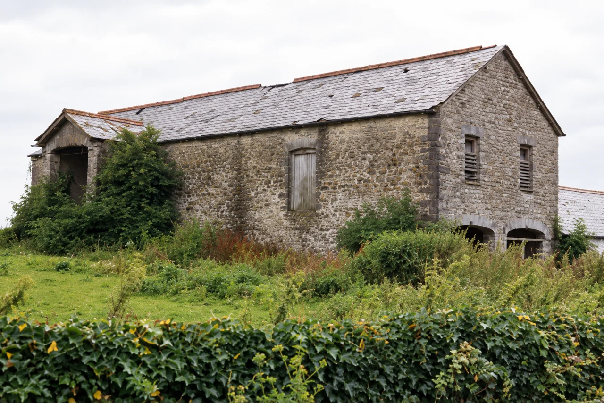
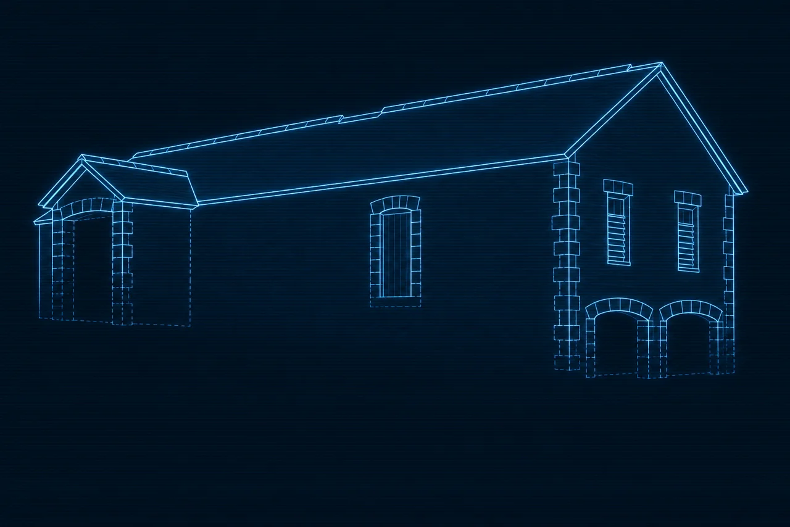

Research Library · Scene reconstructions
AR-REC-0002 — The barn of Great House Farm (Tŷ Mawr), Llandough, as recorded on 29 July 1988
Artist's impression — modern interpretive reconstruction, not a photograph and not evidence
Description
The visible building features follow the Cadw survey photograph of 29 July 1988 (GHF-E106-R37-A3, disclosed under ATISN 27021): the single-storey rubble lias-limestone barn with slate roof and red clay ridge tiles; the small gabled projection at the west end with an open arched doorway partly covered by climbing vegetation; the tall central shuttered opening; the louvred slit vents in the east gable; the two low arched openings at the base of the east wall; dressed-stone quoins; the overgrown foreground and hedge. Surface textures, vegetation and any detail hidden in the photograph are derived finishes, not record.
The Heneb Historic Environment Record GGAT02038s (R. F. Suggett, December 1988) records:
Great House Farmhouse and barn formed an attractive group, built of local lias limestone, and occupied an historic site next to the parish church … Externally both farmhouse and barn appeared to be of C19th date.The barn was demolished with the farm buildings on 6 December 1988 (the same HER; GGAT assessment GHF-E106-R95-A1).
Interpretation
The barn's build date is not established: the HER records only that its exterior appeared C19th in character, and no held source dates the barn's fabric, so no earlier date is depicted or implied. The slit vents, arched openings and quoins are drawn only as recorded in 1988; features hidden by vegetation are shown dashed or omitted in the wireframe twin rather than invented. The interior, roof structure and the barn's working history are unrecorded in the held sources.
This image re-renders the documented 1988 appearance only; the photograph remains the record and this image must never be cited as a source alongside it. The image does not support or weaken any title, phase or family-history position.
Wireframe twin

Sources
| Record | Role |
|---|---|
| GHF-E106-R37-A3 — Cadw survey photograph of the barn, 29 July 1988, disclosed by Cadw / Welsh Government under ATISN 27021 | Geometric and visual basis |
| Heneb Historic Environment Record GGAT02038s — R. F. Suggett, December 1988, citing RCAHM Inventory IV.2 (Greater Glamorgan) p.582 no.445. Original record: archwilio.org.uk/her/chi3/report/page.php?watprn=GGAT02038s (live-checked 31 Oct 2026) | Group and fabric description; demolition date 6 Dec 1988 |
| GHF-E106-R95-A1 — GGAT assessment filed August 1990 | Post-demolition record of the site |
Page version & change log
| Version | Date (UTC) | Editor | Change | Source / evidence | Verification status |
|---|---|---|---|---|---|
| 0.1.0 | 2026-10-31T11:30Z | Instinct (scene-reconstruction task; HubSpot 536842623165) | Page created: faithful re-render of the recorded 1988 scene, wireframe twin, description and interpretation fields | GHF-E106-R37-A3; Heneb HER GGAT02038s; GHF-E106-R95-A1 | Working entry; barn fabric date not established — exterior C19th character only per HER |
Reconstruction images on Cedwyn are artist's impressions made from quoted records. They are held as reconstructions, never as evidence.